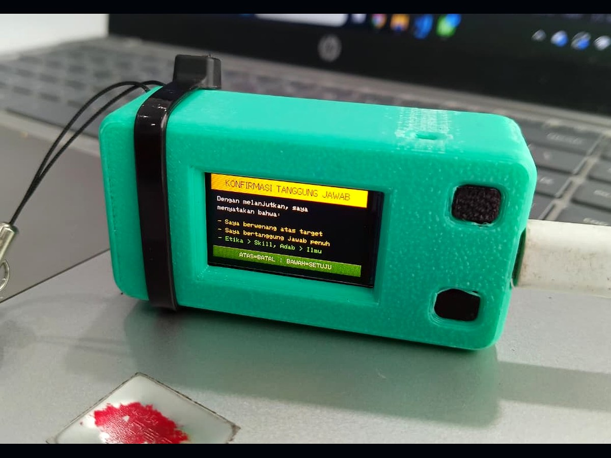

Mulai cepat
Ikuti urutan ini jika baru pertama kali menggunakan NISKALA.
- Hubungkan TTGO T-Display dengan kabel USB data.
- Buka project di VS Code + PlatformIO.
- Jalankan
pio run -t upload. - Buka Serial Monitor pada
115200. - Tekan tombol bawah dua kali pada disclaimer untuk masuk menu utama.
Kompatibilitas hardware
Konfigurasi bawaan ditujukan untuk TTGO T-Display berbasis ESP32 klasik.
| Komponen | Nilai / dukungan | Catatan |
|---|---|---|
| Board | TTGO T-Display ESP32 | Environment PlatformIO: ttgo-t-display. |
| MCU | ESP32-D0WDQ6-V3 | Berbeda dari TTGO T-Display-S3 AMOLED. |
| Display | ST7789, 135 ? 240 px | Driver dan pin diatur di platformio.ini. |
| Radio | WiFi 2.4 GHz + BLE | WiFi klasik ini tidak mendukung 5 GHz. |
| Tombol | GPIO 0 dan GPIO 35 | GPIO 35 hanya input. |
| Toolchain | VS Code + PlatformIO + Arduino | Build memakai espressif32 6.9.0. |
Instalasi visual
Ikuti tiga tahap berikut agar proses upload mudah diulang.



Perintah PlatformIO
pio run # compile pio run -t upload # upload USB pio device monitor -b 115200 # Serial Monitor pio run -t clean # bersihkan build
Board & tombol
Tombol atas digunakan untuk memilih atau naik. Tombol bawah digunakan untuk konfirmasi, mulai, dan berhenti.
Serial CLI
Buka Serial Monitor 115200, ketik perintah, lalu tekan Enter.
helpDaftar semua perintah.statusHeap, suhu, baterai, channel, uptime.scanMemindai WiFi sekitar.logMelihat event log.stopMenghentikan semua modul.webMenyalakan Web Remote tanpa tombol fisik.web stopMenutup Web Remote dan kembali ke menu.rebootRestart board.help status web # buka http://192.168.4.1/rc web stop stop
Panduan 20 menu
Gunakan tabel ini sebagai peta singkat. Modul aktif hanya boleh dipakai pada perangkat dan jaringan milik sendiri atau yang sudah mendapat izin.
| No. | Menu | Fungsi | Input | Hasil |
|---|---|---|---|---|
| 01 | DEAUTH MANUAL | Uji ketahanan management frame pada AP lab. | Pilih AP dan channel. | Counter dan telemetry. |
| 02 | EVIL TWIN | Simulasi rogue AP/captive portal untuk awareness. | SSID lab dan template. | AP simulasi dan event log. |
| 03 | BEACON SPAM | Uji perilaku discovery WiFi. | Preset dan interval. | Counter pengiriman. |
| 04 | PROBE SNIFF | Observasi pasif probe di area uji. | Mulai scan. | MAC, RSSI, SSID terlihat. |
| 05 | GLOBAL DEAUTH | Pengujian aktif terkontrol pada lab terisolasi. | Burst dan reason. | Counter TX dan error. |
| 06 | AUTH FLOOD | Uji tabel autentikasi AP sendiri. | Target dan batas burst. | Status mode dan counter. |
| 07 | BLUETOOTH SPAM | Uji iklan BLE melalui preset. | Preset atau raw pattern. | Status advertising. |
| 08 | PASSWORD | Melihat vault lokal untuk data uji. | Tombol board. | Data lokal di NVS; hapus setelah sesi uji. |
| 09 | KARMA ATTACK | Simulasi AP berbasis probe untuk awareness. | SSID hasil probe. | Daftar SSID dan status scan. |
| 10 | CSA ATTACK | Uji respons terhadap perpindahan channel. | Target AP lab. | Status channel dan event. |
| 11 | WEB REMOTE | Mengendalikan board dari browser. | HP/laptop ke NISKALA_CTRL. | Dashboard remote dan API. |
| 12 | OTA UPDATE | Upload firmware melalui jaringan lokal. | Board dan komputer satu jaringan. | Status OTA. |
| 13 | BLE SCAN | Memindai perangkat BLE secara observasional. | Mulai scan. | Nama, MAC, RSSI, hitungan. |
| 14 | CLOUD SYNC | Mengirim ringkasan data ke hosting. | SSID, URL, API key. | Status sync dan file. |
| 15 | MACRO | Menjalankan urutan modul yang dipilih. | Pilih macro. | Progress dan status. |
| 16 | CLIENT MONITOR | Observasi station pada AP lab. | BSSID target. | Klien, RSSI, paket terlihat. |
| 17 | NETWORK RECON | Pemetaan dasar host dan layanan berizin. | Gateway/subnet. | Host, port, banner ringan. |
| 18 | AP WIFI | Mengelola profil WiFi board. | SSID dan password sendiri. | Profil di NVS. |
| 19 | EAPOL CAPTURE | Observasi frame autentikasi untuk audit lab. | Pilih AP lab. | Status dan metadata capture. |
| 20 | SMART ATTACK | Profil terpandu untuk sesi pengujian. | Profil dan target berizin. | Ringkasan dan telemetry. |
Web Remote
- Jalankan
webmelalui Serial CLI, atau pilih menu WEB REMOTE di board. - Hubungkan HP/laptop ke WiFi
NISKALA_CTRL. - Buka
http://192.168.4.1/rc. - Jika token dikonfigurasi, gunakan header/token yang sesuai.
- Gunakan telemetry, scan, log, export, dan tombol stop untuk mengendalikan sesi.
web memungkinkan pengujian remote tanpa navigasi tombol fisik.Cloud Sync & dashboard
Cloud Sync mengirim ringkasan hasil ke hosting yang Anda konfigurasi. Dashboard publik sebaiknya hanya menampilkan agregat.
- Isi SSID dan password WiFi board.
- Pastikan URL server dan API key sesuai.
- Uji konfigurasi dengan
config get, lalu jalankansync. - Periksa respons endpoint dan jumlah file di dashboard.
Dashboard: Buka Cloud Dashboard ?
Konfigurasi secrets.h
File ini menyimpan kredensial lokal dan sengaja tidak masuk Git.
- Salin
src/secrets.example.hmenjadisrc/secrets.h. - Isi SSID, password, API key, dan token Web Remote milik Anda.
- Build/upload ulang firmware.
- Pastikan
secrets.htetap tercantum di.gitignore. - Jika token bocor, ganti lalu upload firmware baru.
Copy-Item src/secrets.example.h src/secrets.h #define NISKALA_WIFI_SSID "SSID_MILIK_SENDIRI" #define NISKALA_WIFI_PASS "PASSWORD_WIFI" #define NISKALA_SYNC_API_KEY "API_KEY_LOKAL" #define NISKALA_WEB_PASS "TOKEN_REMOTE_KUAT"
Referensi API Web Remote
Endpoint tersedia ketika Web Remote aktif. Header X-NISKALA-TOKEN diperlukan jika token dikonfigurasi.
| Endpoint | Method | Tujuan |
|---|---|---|
| /rc | GET | Memuat panel Web Remote. |
| /api/status | GET | Status ringkas board. |
| /api/telemetry | GET | Telemetry lengkap. |
| /api/log | GET | Event log teks. |
| /api/scan | GET | Daftar WiFi teramati. |
| /api/ble | GET | Ringkasan BLE scan. |
| /api/eapol | GET | Status/metadata EAPOL. |
| /api/config | GET / POST | Baca atau simpan konfigurasi. |
| /api/stop | GET/POST | Hentikan modul aktif. |
| /api/export/probe | GET | Export probe CSV. |
| /api/export/karma | GET | Export Karma CSV. |
| /api/export/logs.json | GET | Export log JSON. |
Troubleshooting
Board tidak muncul sebagai port COM
Ganti kabel USB, coba port lain, tutup Serial Monitor yang masih memakai port, lalu cek Device Manager. Sebagian kabel hanya mengisi daya.
Upload berhenti di Connecting
Tekan dan tahan BOOT saat proses mulai, lepaskan setelah upload berjalan. Pastikan environment PlatformIO benar dan coba baud upload lebih rendah jika perlu.
Layar kosong atau warna salah
Pastikan targetnya TTGO T-Display ESP32, bukan T-Display-S3 AMOLED. Periksa driver ST7789 dan pin di platformio.ini.
Serial Monitor bisa membaca tetapi tidak bisa mengetik
Fokuskan jendela monitor, pilih line ending Newline/Both NL & CR, pastikan port tidak dipakai aplikasi lain, lalu tekan Enter.
Web Remote tidak terbuka
Jalankan web, tunggu AP NISKALA_CTRL, hubungkan HP, lalu buka http://192.168.4.1/rc. Matikan VPN/data seluler sementara jika HP memilih rute lain.
Web Remote terputus ketika BLE dimulai
WiFi dan BLE berbagi radio. Mode BLE tertentu memang mematikan WiFi; hubungkan ulang setelah modul selesai.
Scan tidak menemukan 5 GHz
ESP32 klasik pada board ini hanya mendukung 2.4 GHz. Gunakan perangkat audit yang mendukung 5 GHz untuk jaringan tersebut.
Cloud Sync gagal
Periksa SSID, password, URL HTTPS, API key, timeout, dan respons server. Uji endpoint dari komputer terlebih dahulu.
Heap turun atau board restart
Hentikan modul, reboot, kurangi refresh/export, hindari proses radio bersamaan, dan cek perubahan String/scan berulang.
Hasil modul aktif tidak sesuai
Periksa band 2.4 GHz, channel, PMF/WPA3, jarak, antena, dan target lab. Management frame yang terlindungi dapat membatasi hasil.
Glosarium
Nama jaringan WiFi.
Alamat MAC access point tertentu.
Indikator kekuatan sinyal yang diterima.
Protected Management Frames.
Frame autentikasi 802.1X/WPA.
Bluetooth Low Energy dan advertising.
Access point tidak sah.
Halaman web sebelum akses diberikan.
Penyimpanan konfigurasi non-volatile ESP32.
Pengiriman ringkasan data ke server.
Changelog ringkas
Prototype menu dasar dan tampilan board.
WiFi, BLE, Web Remote, dan sinkronisasi.
Modularisasi, state machine, dan telemetry.
Observability, counter TX, auth Web Remote, Cloud Dashboard, dan dokumentasi responsif.
Batasan & penggunaan
- ESP32 hanya mendukung WiFi 2.4 GHz.
- PMF/WPA3 dapat memblokir management frame tertentu.
- WiFi dan BLE berbagi satu radio.
- Gunakan lab terisolasi untuk pengujian aktif.
- Jangan menyimpan password/API key di repository.